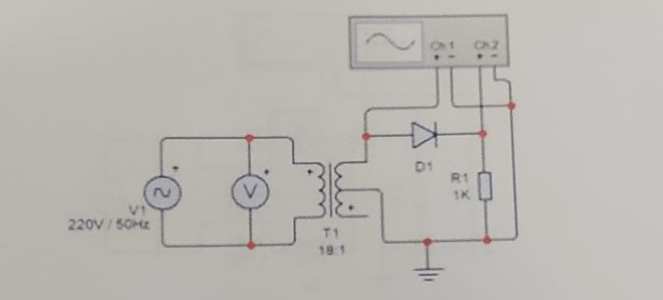
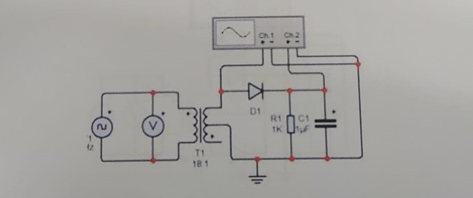

Gedung TILC, Blimbing Sari, Caturtunggal
Depok Sleman Yogyakarta, Indonesia. 55281
email : sv@ugm.ac.id
telp : +62 (274) 541020
telp : +62 (274) 541020
Pada hari Selasa, 13 September 2022 para mahasiswa melakukan praktikum tentang “APLIKASI DIODA PADA RANGKAIAN PENYEARAH”.
Tentang LAB. ELEKTRONIKA DASAR : Laboratorium ini mengelola kegiatan praktika Dasar Elektronika bagi seluruh mahasiswa, dan mendukung kegiatan penelitian dan pengabdian pada masyarakat.
Dioda adalah komponen aktif dua kutub yang pada umumnya bersifat semikonduktor, yang memperbolehkan arus listrik mengalir ke satu arah dan menghambat arus dari arah sebaliknya. Dioda dapat disamakan sebagai fungsi katup di dalam bidang elektronika.
Aplikasi dioda sebagai penyearah tegangan AC atau rectifier adalah rangkaian dasar dari sebuah power supply yang paling banyak digunakan pada hampir semua rangkaian elektronika. Ada terdapat beberapa rangkaian variasi dari penyearah dioda, yang mana masing-masing variasi rangkaian dioda memiliki karakteristik sinyal output yang berbeda pula.
Beberapa jenis dasar dioda sebagai rectifier atau penyerah adalah rangkaian setengah gelombang (half wave rectifier), gelombang penuh center tap (full wave center tapped), dan rangkaian jembatan gelombang penuh (full wave bridge rectifier).
Skema penyearah setengah gelombang
Skema penyarah setengah gelombang dengan penampis
Dokumentasi :
Gedung TILC, Blimbing Sari, Caturtunggal
Depok Sleman Yogyakarta, Indonesia. 55281